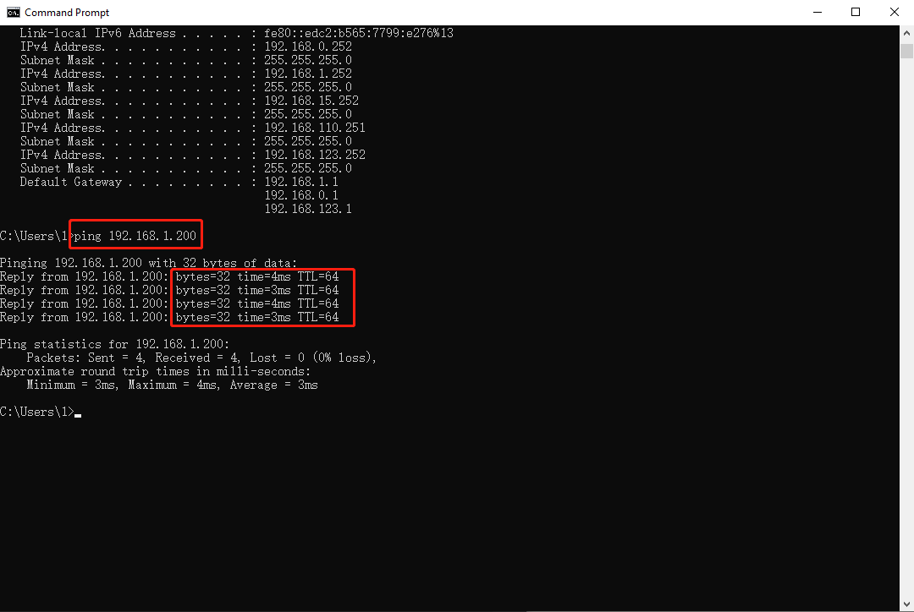

安装需要注意事项
2024年11月13日 · Charlie
首先连接好商家店内的WiFi (很重要，这一步是用来确定商家店内网段)
在 Windows 上，打开 “Commannd” (如下图)

在 Mac 上，打开 “Terminal” (如下图)
输入 ipconfig
即可查看到当前 Windows电脑的IP地址。 也能确定商家店内网络的网段
在 Mac 上，按住 “Option” + 点击WiFi 图标即可查看到当前 Mac电脑的IP地址。

POS设备，我们尽可能把网段设置在 200 以后 (如：192.168.1.200)。并且我们要确定此网段是否被使用
如何检查此网段是否被使用 —> 在 Command 或者 Terminal 中输入
ping 192.168.1.200
如果看到有毫秒的显示，就说明此网段被使用了
如果看到 “Destination host unreachable”，就说明 这个IP 地址并未使用。 也就是可以使用
Command 和 Terminal 会持续访问网段，如需暂停 Windows 上 按住 “CTRL + C” ， Mac 上 按住 “control + C”